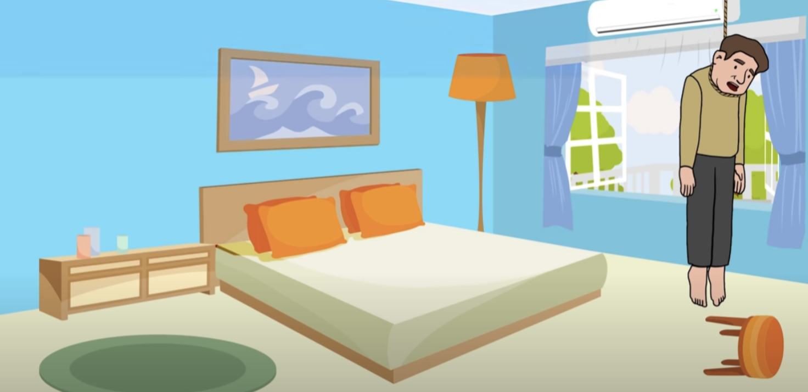
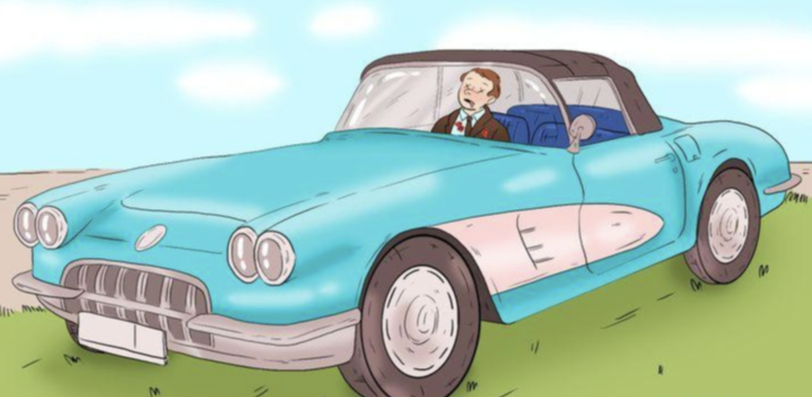

추리 게임
범인을 찾아라
크라임씬을 보여드립니다.
🕵🏻 범인을 찾아보세요.
첫번째 문제
한 중견 기업의 회장님이 목을 메고 죽은 채 발견되었습니다.
한 중견 기업의 회장님이 목을 메고 죽은 채 발견되었습니다.
신고를 받고 즉시 사건 현장에 도착한 경찰은 이 날 집에 있던 모든 사람을 불러 모았습니다.
그 날 집에 있었던 사람은 🧑🏻🍳 요리사, 👩🏻🌾 정원사, 👦🏻 아들 3명. 각자 설명한 상황은 다음과 같습니다.
👩🏻🌾 정원사:
저는 정원에서 잔디를 깎고 있었어요.
그런데 갑자기 의자가 넘어지는 소리가 들려서 고개를 돌려보니
창문으로 목을 메단 회장님의 모습이 보였습니다.
깜짝 놀라서 주저앉았고, 바로 큰 소리로 도와달라고 소리쳤지만... 흑흑... 너무 늦었습니다. 흑흑...
👦🏻 아들:
저는 그 때 거실 바깥쪽에서 물을 마시면서 신문을 보고 있었습니다.
정원사 아저씨의 도와달라는 소리를 듣고, 바로 아버지 방으로 달려갔지만, 시간이 충분하지 않았네요.
이상해요. 경찰관님. 아버지는 이렇게 자살하실 분이 아니에요. 너무 황당합니다!
🧑🏻🍳 요리사:
저는 부엌에서 아침식사를 만들고 있었어요.
다른 사람들의 목소리를 듣고 저도 바로 회장님 방으로 달려갔습니다.
하지만... 이렇게 허무하게.... 좋은 분이셨는데 ... 흑흑
과연, 이 사건은 타살일까? 자살일까?
당신이 선택한 범인과 이유는?
범인은 바로 👩🏻🌾 정원사
범인은 바로 👩🏻🌾 정원사
증거1
정원사 외에는 아무도 의자가 넘어졌다는 소리를 들은 사람이 없습니다.
모두 정원사의 외침에 회장님의 죽을을 알았습니다.
증거2
그림에서 보듯 에어컨이 가동되어있고, 창문 또한 활짝 열렸습니다.
아마도 정원사가 방에서 살해, 자살로 위장 후 창문을 통해 밖으로 나가 소리친 것으로 추정됩니다.
두번째 문제
한 남자가 차 안에서 총을 맞아 사망했습니다.
한 남자가 차 안에서 총을 맞아 사망했습니다.
차량 내부와 피해자의 옷에는 건파우더가 확인되지 않았습니다.
즉, 살인자는 차 안에서 총을 쏜것이 아니라는 의미입니다.
차량에는 총알 구멍 같은 흔적이 전혀 업습니다.
모든 문과 유리창은 닫혀있었고, 잠겨있었습니다.
어떻게 외부에 흔적없이 밀실인 차량 내부에 피해자를 피살할 수 있었을까요?
정답은 소프트 탑이 장착된 오픈카
정답은 소프트 탑이 장착된 오픈카
오픈카 지붕이 열린 상태에서 범인은 멀리서 피해자를 저격해 피살한 뒤, 소프트탑을 닫고 밀실 살인인 것처럼 꾸민 것입니다.
세번째 문제
사우나 살인

사우나 살인
4명의 친구 잭, 스티브, 패트릭, 미카엘은 자주 사우나에서 모입니다.
어느 날, 패트릭은 사우나에서 날카로운 무언가에 살해된 채로 발견됐습니다.
자주 사우나를 이용하는 4명은 각자 하나씩 소지품을 챙겨오고 있습니다.
잭은 음악가라서 아이팟을 챙겨 음악을 듣곤합니다.
스티브는 은행에서 일하며, 항상 마실 것을 보온물통에 담아와서 마십니다.
패트릭과 미카엘은 변호사로서 항상 읽을 책을 들고와서 읽습니다.
자주 사우나를 이용하는 4명은 각자 하나씩 소지품을 챙겨오고 있습니다.
잭은 음악가라서 아이팟을 챙겨 음악을 듣곤합니다.
스티브는 은행에서 일하며, 항상 마실 것을 보온물통에 담아와서 마십니다.
패트릭과 미카엘은 변호사로서 항상 읽을 책을 들고와서 읽습니다.
과연 범인은 누구일까요?
범인은 바로 은행원 스티브
범인은 바로 은행원 스티브
보온물통에 날카로운 얼음을 넣어와 피해자를 찔러 살해. 흉기는 그대로 녹아 지문도 남지 않고 증거도 사라지게 됩니다.